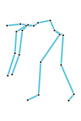
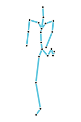
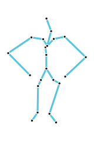

Problem
Current mmWave pose models fail on unseen actions.
Training set
All 27 actions
Test action
A17 Left-hand wave
Seen
Training set
26 actions; A17 excluded
Test action
A17 Left-hand wave
Held out
Problem
Method
MoCap measures mmWave pose coverage.
AMASS


mmWave




Simulation Evaluation
WiCompass keeps scaling.
Real-World Evaluation
WiCompass generalizes better.
Takeaway
For mmWave HPE, data quality matters more than scale: measure pose coverage and guide RF collection with MoCap priors.